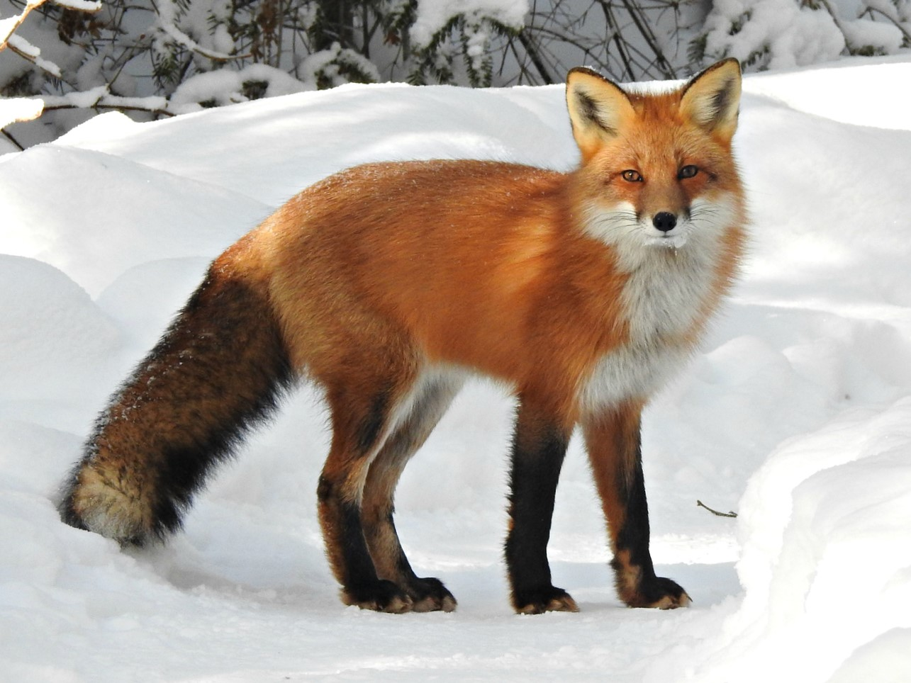
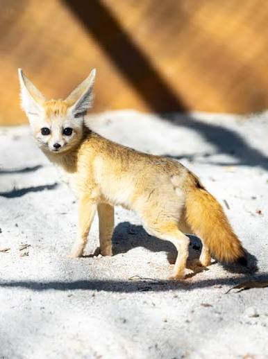

Raposa Vermelha
Curiosidade
A raposa-vermelha é a espécie mais comum e pode ser encontrada em todo o hemisfério norte. Elas são extremamente adaptáveis e conseguem viver até em áreas urbanas!

Raposa do Ártico
Curiosidade
A pelagem da raposa-do-ártico muda de cor com as estações: fica totalmente branca no inverno para camuflar na neve, e marrom-acinzentada no verão!

Raposa-Feneco
Curiosidade
Também conhecida como raposa-do-deserto, é a menor espécie de raposa do mundo. Suas orelhas gigantes servem para dissipar o calor do deserto e ouvir presas sob a areia.